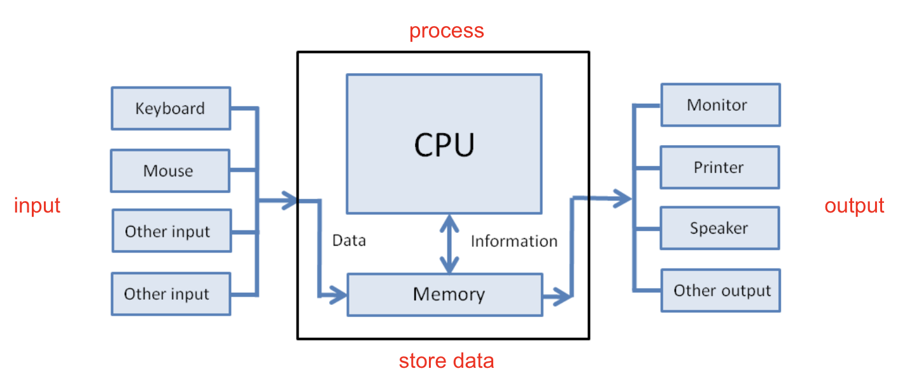
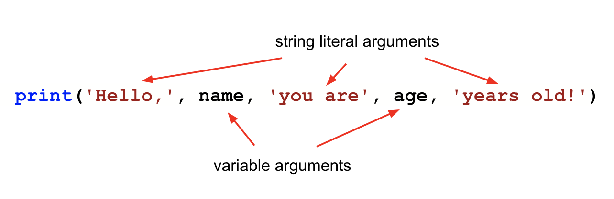

Lesson 3 - Input, Output, and f-strings
At the end of this lesson, you will be able to:
- Add comments to your programs.
- Use
print()and escape sequences to display formatted output. - Build clean output messages with f-strings.
- Make your programs interactive by asking the user for input.
The shape of a program: input, process, output
Almost every program follows the same rhythm: take in some input, process it, and produce some output. So far our programs have only done the last part. In this lesson we'll get good at output, and then add input so our programs can actually respond to a person.

Comments
A comment is a note to yourself (or whoever reads your code later) that Python ignores completely. Anything to the right of a # is a comment:
x = 2 # set the variable x to 2
y = x * x # compute x squared, store the result in y
print(y) # show the value stored in yGood comments explain why you're doing something, not just what - and they're a kindness to the future version of you who has forgotten how this all worked.
Output with print()
You give print() things to display, separated by commas. Each thing you hand it is called an argument. By default, print() puts a space between the arguments:

def main():
name = 'Dahlia'
age = 20
print('Hello,', name, 'you are', age, 'years old!')
main()Character vs. string literal: back in Unit 1 we saw that characters are stored as ASCII numbers. A string literal (or just "string") is a series of characters inside quotes - 'Hello' and "Hello" are both string literals.
You can also control spacing and add line breaks with escape sequences - special character combinations that start with a backslash: \n is a newline, \t is a tab.
def main():
print('One\nTwo\nThree') # each on its own line
print('One\tTwo\tThree') # separated by tabs
main()A cleaner way: f-strings
Gluing output together with commas (or with + and a pile of str() calls) gets clumsy fast. Python has a much nicer tool: the f-string. Put an f right before the opening quote, and then drop any variable into the text inside {curly braces}:
def main():
name = 'Dahlia'
age = 20
print(f'Hello, {name}! You are {age} years old.')
main()Same result as the comma version above, but it reads like a real sentence - you can see exactly what the output will look like. And there's no str() juggling: Python drops each value into place for you, number or string.
f-strings can format numbers too. To show a float with two decimal places (great for money), add :.2f after the variable:
def main():
price = 4.5
print(f'That will be ${price:.2f}, please.') # That will be $4.50, please.
main()From here on, f-strings are usually the cleanest way to build your output. Use them.
Input: making programs interactive
To ask the user for something, use the input() function. You give it a prompt (the question to show), and it waits for the person to type a response and press Enter:
name = input("Enter your name: ")
 Bug Alert:
Bug Alert:
New programmers often forget to store what input() gives back. The answer the user types has to go into a variable (the part to the left of the =) - otherwise it's gone the instant they hit Enter!
Here's the catch that surprises everyone: input() always hands you back a string - even if the user typed a number. If you need to do math with it, you have to convert it first, with int() for a whole number or float() for a decimal:
def main():
item = input('Enter item: ')
cost = float(input('Enter cost $ '))
quantity = int(input('Enter quantity: '))
# cost and quantity are now numbers, so we can do math
total = cost * quantity
print(f'{quantity} x {item} = ${total:.2f}')
main()One more handy trick for text input: .upper() and .lower() convert a string to all uppercase or all lowercase. That's useful when you want to compare answers without worrying about how the user capitalized them (so "Yes", "yes", and "YES" can all count the same):
city = input("Enter the city you live in: ")
city = city.lower() # store the lowercased version back into cityWatching how a real program turns a plain-English plan into working code is the best way to make this click:
Check for understanding
Coming up next: Now that we can get numbers in and print results out, let's do real math with them - operators, division, remainders, and named constants.